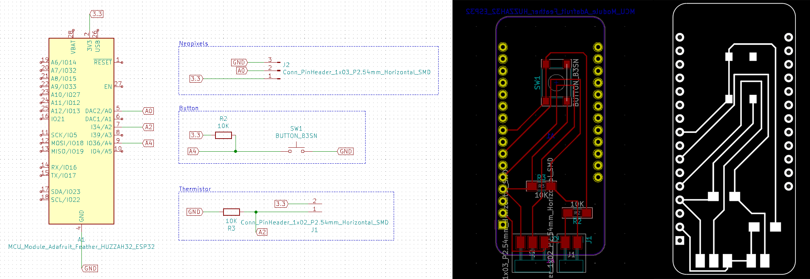

fabacademy
week 6-10
week 6: electronics design

learning outcome This week we got a big amount of input about possible parts of the PCB board. There are different things like the SMD resistors, which could have different colours which includes different amounts of energy. There are also capacitors, which are like small fast charging batteries. It’s a passive electrical component with the ability to store electric charge and the associated energy statically in an electric field in a DC circuit. It could be out of ceramic (non polarized, equally charged) or electrolytic (polarized, positive and negative charged). If you have a power supply with to much energy for your sensors, capacitors could help to put the amount down. Then you can have diodes/ led lights, which also help the electricity to go just in one direction. Zener/Schottky diodes are the types of diodes which let a bid energy through. Oscillator normally have a oval or cylindric shape, it’s like a metrum, which observes the vibrations or like a weight or clock. Mosfet or transittors are the muscles of any board, they are very similar. But transistors are used for very high accurat applications. For example you have a micro controller with 5v dc and a decive with light with 1000 v dc and then the mosfets to control everything. Regulators (reg) are regulating the power supply, so which amount of energy should go through, it includes Volt and Ampere. For designing the PCB boards which could include these different parts you can use different EDA softwares (electronic design automation) like: “Kicad”, “Autodesk eagle”, “fritzing” or “Gitlab”.
reflection In this week the most of the things were new for me and very interesting, but also hard to understand. In the precourse and also during the first term we had some classes about electronics but not specifically designing a pcb board. Also the programs were completely new for me and I was excited to learn them.
tasks Before starting to design the pcb boards, I downloaded two libraries to upload them in the program: In the fab library the fab.lib file and in the foodprints the fab.pretty file. Then I conceptualize the board with knowing what I want to do and which components I need. After that I started to design the board in the “Eeschema”- part. After adding the parts I generated the netlist and opened this one in the programm to finalize the board. And then I start fabricating.
I designed a board for our thermometer, which includes 10 LED´s, a button, two resistors, a thermistor, a three pinn and a two pinn.
week 7: computer controlled mashinig
learning outcomeThis week we learned everything about CNC (Computerized Numerical Control). CNC is a very accurate, flexible and automate way of digital fabrication and can be used for various designs. There are two types of CNC with 3 axes or then one with more then 3 (multiple). This machines often have a huge weight and content liquid for cooling down. There are two different motors for the machines router (cheaper) and spindle (more quiet, more horse power). For milling you need liquid so the material will not break, which called lubbing. It can be automatically (powerful, expensive, dirty) or manually (cheap, clean, weak). You need to take care about different things while milling, also like the kerf tolerance and also the material is “bouncing” back. Also you cannot have a sharp edge at the end, it will be always round, or you need to make a t- or dog bone (like on the picture). The t-bone you could see from the sight, but the dog bone gives less support in the middle.
For the fabrication you need to create a 3-modell and then export it to a g-code and change the specific material and machine settings. You can have two different bits: mills (for milling = flat) go sideways when turning or drills (for holes = round) go down when turning. And also different kind of rotations: straight (Easy for plastics), Up (Metalls dence materials), Down (For soft materials) and Compression (For laminating materials). The next is to set up the cnc chip load, which is the amount of material being removed by each glute of the cutting tooll per revolution. You can mill from the top (climbing) or from the sight. To have it more accurate you need attachments, which could be through a vacuum, T-slot, Double side tape, Screws or taps. Different Joints
reflection I figured out that the cnc is nice but I think for some parts its easier just to use conventional saws etc., because all the settings take a lot of time. Also I focused more on grasshopper again and designed parts with it.
tasksFor our slow lab this week I wanted to do a food storage with the cnc and als i wanted to try building a stool. Also I set myself a task to use grasshopper and create another model with layers and “nesting” and learn how to do it. First I designed the 3d file with RHINO and then I added the t-bones for the joints, to get a better shape to join the parts, because when milling with a normal bit you get a round corner instead of a 90% angle. The t- or dog-bone helps you to make useable joints. After that I saved the file into a dxf one and import it in the programm “EAGLE”. Then I checked the settings for the bit I want to use and set the up in the programm and also the specific one for the machine, like the speed and so one. To callibrate the CNC mashine, first screw, glue or otherwise secure the wooden plate to the mounting plate. Next, the bit is fixed by screwing it with the entire head to the mashine. Then the x and y axis are specified/fixed manually and a distance meter is used for the z axis. Then the ventilation is switched on. Next, the NC file is uploaded to the Kenetic program and the spindle and feet are reseted. And then the settings are defined.

trying out programs
slicer
rhino
grasshopper

week 8: embedded programming
learning outcome This week we learned how a computer is made of and how to program. First we spoke about the difference between digital and analogy computer. The main difference is the continuity, the analogy computer are just showing a specific number of steps but the digital include all steps/processes. Also you can have different kind of hardware, one time microcontrollers and normal computers, the difference here is the microcontrollers are normally just for one task without any human interaction. Then you have “pcb” vs “Ic”. The “ic”/ integrated circuit is an electronic circuit applied to a thin wafer of semiconductor material, usually a few millimetres in size. And PCB / printed circuit board is a glass epoxy substrate with copper conductors and pads on the surface to which ICs and components are soldered to make a circuit assembly. Transistors could control the flow in an automatic way, for example you can add many transistors to combine different tensions. They are electronic semiconductor components who controls low electrical voltages and currents.
reflection This week I recognize that I really need to focus on learning more about electronics. I do not feel sufficiently knowledgeable about the specific parts to be able to programm something on my own, but would love to learn it. In the future I can imagine that programming will be useful more and more and its good to know at least the basics to understand the workflow.
tasks The pcb design i did in week 6, i milled this week. First i saved the pcb-file from KiCad as a SVG-file and opened it in illustrator. Then i changed the colors, made the lines, holes and the outline in three different layers and saved the three layers separatly as a PNG. Then I openeded and start a new programm "PCB CBA". I set up separatly all three rml files. In the mashine we glue the plate on it so it sticks good. For the outline and holes we need the same bid (1/32)and for the traces another (1/64).

week 9: molding & casting
learning outcome Week 9 was about producing molds and casts. Molding is a nice method to make replicate an already existing shape. You can use the three steps procedure, first you produce a negative hard mold for example with the 3D printer, then you can pour material in this mold for example silicon to make a soft positive mold and then you can press the soft molds together and put another hard liquid into it to get the same negative shape like the first mold but out of a special material. Casting could have been done while pouring the material to make solid pieces and second with rotating to make a hollow shape. When mixing the casting material its important to know that every material has a specific time frame to dry/ pour etc. For the molds you can use for example synthetic wood, Polyurethane/ Urethane/ epoxy/ RAKU tooling board or mechanical wax (it´s practical because you can melt it always again, it´s recycable). For the cast you can chose between soft/flexible ( Latex, Silicone, Polysulfine, Polyurethane and other diy materials like biomplastics (The problem is they are shrinking) and hard material (Liquid resin plastic or metal …). Problems here could be the consistence of the material, airbubbles or the cast filles not completely the mold. For the shape its important to add a small angle so its easier to remove the cast from the mold. Also the mold needs two holes, one for the air and the other one for the material. When preparing the cast mix it first well and use the vacuum device to suck out all the airbubbles in around 3-5 min. After that slowly let the air out and pour it into the mold and wait 3 hours.
reflection I really liked this week, but also my head is in so many different projects so its hard to just focus on the fab academy before the design dialoges. But I nevery really designed/used the 3 steps molding/ casting and would like to try it while using blender to make nice looking organic shapes.
tasks I wanted to make a mold to be able to cast chocolate. So I start 3d modelling the mold and create a mold for the 3d printer. Then I 3d printed it and sand it a bid. Then I pour chocolate inside.
week 10: output devices
learning outcome The class starts with explaining what microcontrollers are. “A microcontroller (MCU for microcontroller unit) is a small computer on a single integrated circuit. A microcontroller contains one or more CPUs (processor cores) along with memory and programmable input/output peripherals”. There are different microcontrollers which different themselves from their operations and calculations and also if they are inputs or outputs. Then we have microcontroller boards which are considered a small computer built on a metal oxide semiconductor circuit chip, like “Arduino”. We use heathers to connect things on the boards and shields, which are boards that can be plugged on top of the (Arduino) PCB extending its capabilities. The different shields follow the same philosophy as the original toolkit: they are easy to mount, and cheap to produce.
Then we have SBC´s, which are computer with all of its essential components such as RAM, CPU, and GPU built-in. Usually, SBCs are small, about the size of a credit card, or a bit larger but still smaller than the average desktop PC., like “Raspberry” Pis. Also we have HAT´s (Hardware Attached on Top). A HAT is an add-on board for (“Raspberry Pi B+”) that conforms to a specific set of rules that will make life easier for users. HAT´s are like shields for the boards but especially for the SBC´s.
Then every microcontroller or SBC´s need a power supply, where you need to think about first for what?, should it be portable (batteries) or stationary (cables)? Or is it with cables, then is it AC or DC? Possible supplies could be a lithium battery, usb, cable or solar panel (you need extra hardware for that). Also the network is important, like how far we need to send the information/ range? Is it a long (depending on the application, different frequencies) or short distance (WiFi: high bandwidth, BLE: low consumption or Zigbee…). It could be also a cabled communication, although not very common in the microcontroller boards we do - ethernet? It can also power the board with PoE! It always depends on the interface and the out and inputs, which are depending on the pin amounts, the type and the communication protocols. Peripherals are the ‘extras’ beyond plain number crunching - like digital i/o pins, capacitive touch, ADC, SPI, I2C, UART, I2S, etc… The next important part is the data/processor. For example the RAM. Ram size will determine how much you can do in your code: how many variables can be used at the same time, and because of that how many libraries, and other things your code can integrate. 2-4kb is kind of small, 32kb is good for many projects. This memory is volatile (i.e. it gets erased when the board is unplugged). Then the Flash size / External flash: it will determine how big your code can be in general (the totality of the compiled code you flash into the board). 4kb is small, 256kb is very good for many projects. The ESP8266 has 4Mb (or even 16Mb). Third the EEPROM: you might need this if you want to store small things permanently (i.e. when the board is unplugged it doesn’t get erased). Then the Data streams: do yo need to handle video/audio at high speed/resolution? Better use a SMC. And last the data storage: do yo need to store data on the board? In other words, do you need memory? Maybe use one board that has SD-card compatibility!reflection This class really made a lot of electronics parts much more clear. After it I understood more and know better how to start making a pcb board or what the different components are for.
tasks
FABACADEMY